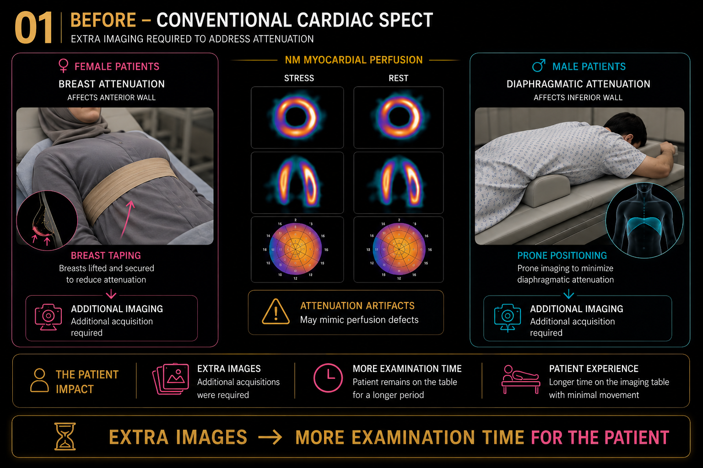

01Before
Conventional Cardiac SPECT
Conventional myocardial perfusion imaging could require additional views to address breast and diaphragmatic attenuation artifacts.
Extra Images → More Examination Time
More time for the patient on the imaging table.

View full size